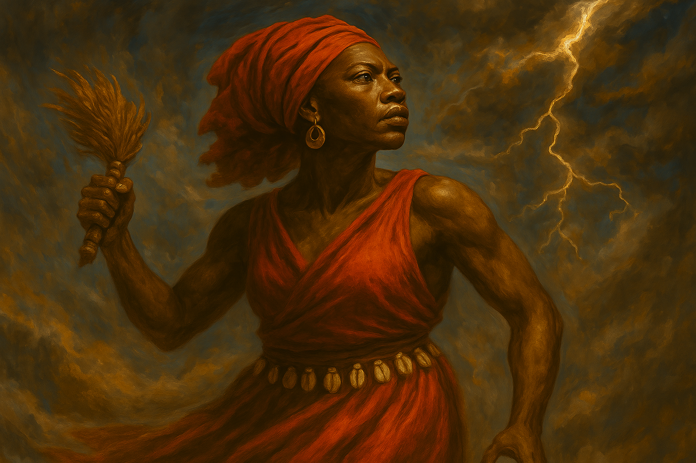
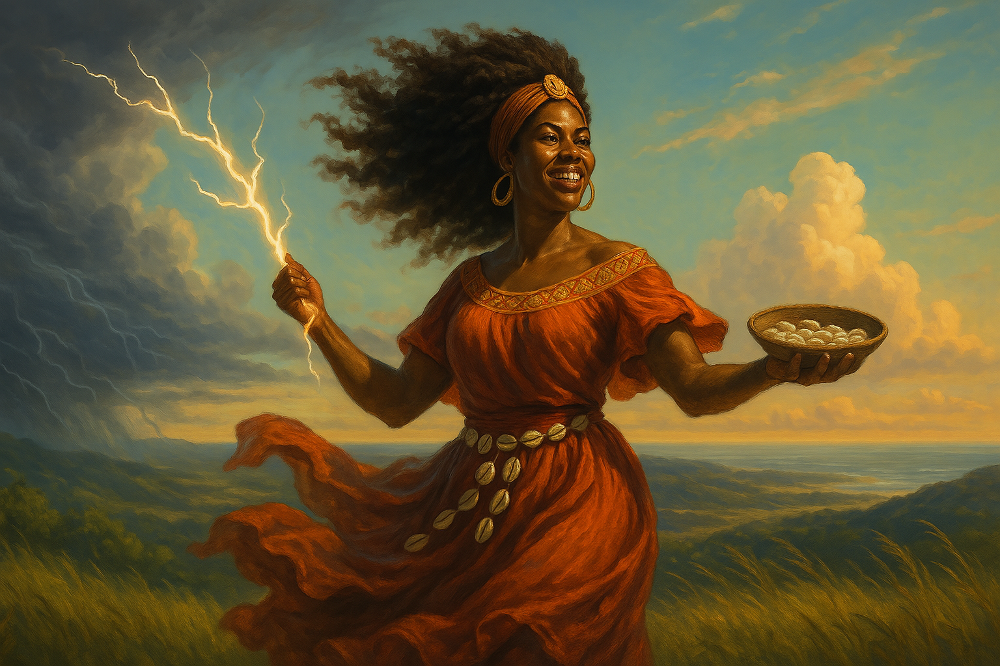
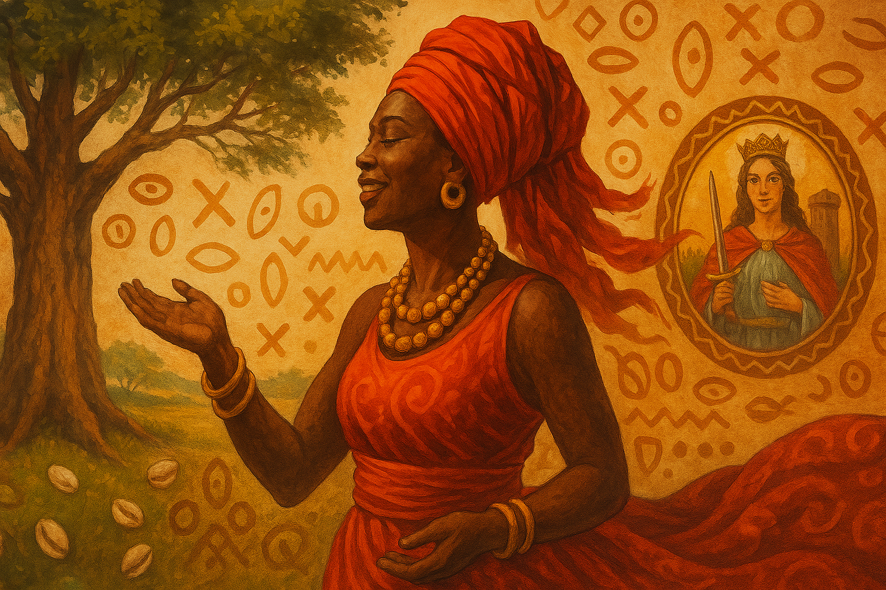
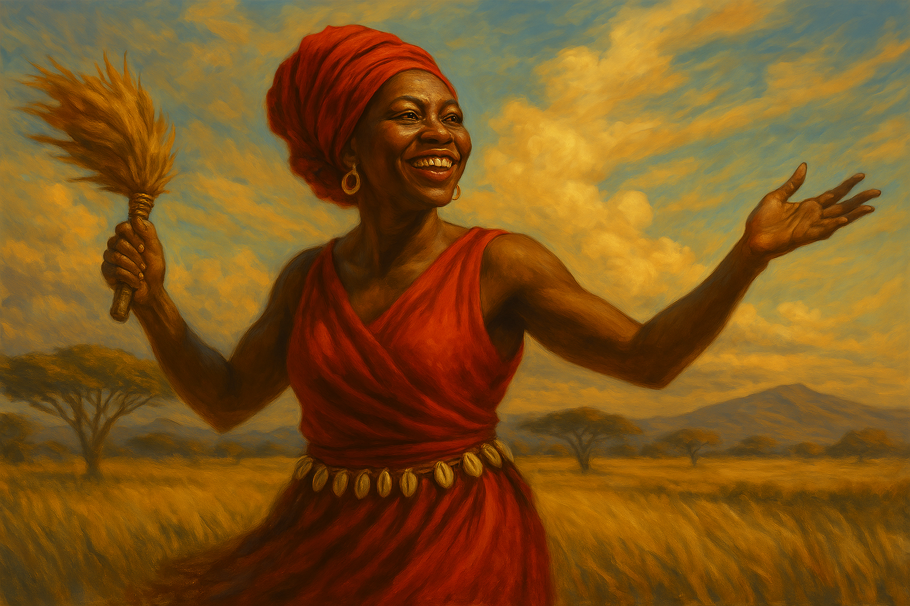

Iansã, conhecida em sua forma original como Oyá, é uma das figuras mais fascinantes, poderosas e complexas dentro do panteão iorubá. Senhora dos ventos, das tempestades e dos espíritos dos mortos, ela não apenas domina os elementos da natureza como também representa os movimentos profundos de transformação da vida — seja na alma, na natureza, nas emoções ou no destino.
Mas quem é, de fato, Iansã? Qual é a sua origem espiritual, cultural e histórica? Como essa divindade africana percorreu o oceano, atravessou o sofrimento da escravidão e se estabeleceu como um dos orixás mais cultuados no Brasil, tanto no Candomblé quanto na Umbanda?
Para responder a essas perguntas, é preciso mergulhar nas raízes mais profundas da religiosidade iorubá, compreender o papel dos orixás no sistema de Ifá, decifrar o significado do nome Oyá e seguir seus passos míticos até o momento em que seu culto se fundiu ao catolicismo popular sob a figura de Santa Bárbara, como forma de resistência cultural.
Neste estudo, abordaremos com profundidade:
Cada um desses pontos será explorado com riqueza de detalhes e embasamento histórico, espiritual e simbólico, proporcionando uma visão completa da trajetória de Iansã — desde as savanas africanas até os terreiros brasileiros, onde continua a ser cultuada com amor, respeito e reverência.
Este é um convite para conhecer não apenas uma divindade, mas um legado espiritual de resistência, força, sabedoria e liberdade. Que os ventos de Iansã nos conduzam ao entendimento profundo de sua essência.
Iansã, como é conhecida no Brasil, é a forma adaptada e sincretizada de Oyá, uma das divindades mais intensas, imprevisíveis e transformadoras do panteão iorubá. Oyá não é apenas uma orixá — ela é o próprio movimento da natureza e da alma humana. Oriunda da espiritualidade ancestral do povo iorubá, cuja civilização se desenvolveu no território da atual Nigéria, bem como em partes do Benin e do Togo, Oyá ocupa um papel central dentro da cosmovisão africana.
Na tradição iorubá, os orixás são princípios universais da natureza, manifestações diretas do divino, que atuam tanto no mundo visível quanto invisível. Eles não apenas regem fenômenos naturais como também se manifestam dentro do ser humano, em sua personalidade, destino e missão espiritual. Neste sistema sofisticado, Oyá é a deusa que rege os ventos, as tempestades, os raios, os ciclones e os ancestrais desencarnados (Egungun). Ela é, portanto, a força que sopra a renovação, que varre o velho para dar lugar ao novo, que anuncia as mudanças inevitáveis da vida e que conduz as almas para o além.
O nome "Oyá" deriva do rio de mesmo nome na Nigéria — um rio feminino e sagrado, que simboliza a fluidez, o poder transformador das águas e a energia vital que flui mesmo nas piores tempestades. A raiz do nome pode ser traduzida como “aquela que rasga” ou “aquela que transforma”, indicando uma potência arquetípica que rompe com estruturas cristalizadas e desafia tudo que impede a evolução. Oyá não é um vento leve e suave; ela é o vendaval que não pede permissão, mas sim, transforma.
No universo simbólico iorubá, Oyá representa a transição, o limiar entre mundos, o caminho do meio entre o nascimento e a morte. Ela é a senhora dos portais e das passagens. O seu domínio sobre os Egungun, os espíritos ancestrais que voltam para orientar os vivos, confere a ela um poder raro entre os orixás — ela é a única mulher autorizada a lidar com os mortos em certas tradições, o que a posiciona como guardiã entre o mundo dos vivos e o mundo dos ancestrais.
Espiritualmente, ser a Deusa dos Ventos significa ser o próprio sopro divino que movimenta a estagnação da alma. Os ventos de Oyá são os ventos da verdade, da consciência e da ruptura com o que já não serve. Ela não tolera a permanência na dor, no medo, na mentira ou na prisão do ego. Onde ela passa, algo é levado embora — mas não para causar sofrimento gratuito, e sim para abrir espaço para o renascimento, para o novo ciclo, para a liberdade emocional, espiritual e existencial.
Seu culto na África é marcado por danças vigorosas, onde os iniciados giram com vestes largas, que imitam os redemoinhos dos ventos, ao som de toques que evocam trovões e rajadas de ar. Ela é o fogo do céu e a dança do vendaval. Como deusa guerreira, carrega espadas, chicotes ou facões — e não para destruir, mas para cortar os grilhões invisíveis que nos prendem a situações que nos impedem de evoluir.
Nos mitos iorubás, Oyá é citada como a nona esposa de Sàngó, o orixá do trovão, da justiça e do fogo. Mas ela não ocupa uma posição submissa. Muito pelo contrário: é a única que compartilha com ele o domínio dos raios e dos trovões. Em várias histórias, é ela quem empunha os raios mágicos com igual ou maior destreza que o próprio Sàngó. Entre os símbolos de seu poder está o búfalo sagrado, com o qual Oyá se transfigura e se protege. Esse búfalo representa o instinto, a força da natureza indomável e a capacidade de mudar de forma — ou seja, de se adaptar, de escapar, de renascer.
No plano espiritual, Oyá/Iansã representa a alma em transição, o espírito em movimento, a mudança interior necessária para o amadurecimento e o reencontro com o próprio destino. Ela nos ensina que nada é permanente — nem mesmo o sofrimento. Tudo pode mudar. Tudo deve mudar.
Na diáspora africana, especialmente no Brasil, a cultura iorubá foi denominada de forma mais ampla como cultura nagô. O termo “nagô” é uma generalização que surgiu nas Américas para se referir aos descendentes iorubás escravizados, e sua religião foi estruturada com base nos fundamentos da cosmologia de Ifá, o sistema divinatório mais sagrado do povo iorubá.
Ifá é uma tradição oral e filosófica regida por Orunmilá, o orixá da sabedoria e do destino, e é através dele que se conhece os caminhos (odùs) da criação, da moral e do comportamento humano. Nesse sistema, Oyá tem papel central como uma divindade que lida com a transformação dos ciclos, espiritualidade ancestral e o domínio sobre a morte simbólica, especialmente no trânsito entre o mundo dos vivos e dos mortos.
Iansã/Oyá é a única orixá feminina autorizada a participar dos cultos de Egungun, que são cerimônias de culto aos ancestrais. Essa relação confere a ela um poder raro: ela caminha entre o mundo visível e o invisível, controlando os portais espirituais. A iniciação em Ifá, portanto, reconhece Oyá como uma divindade de profunda sabedoria espiritual, com atribuições que vão além da natureza — ela atua na alma, no destino e na memória ancestral dos povos.
Durante os séculos de colonização e escravidão, milhares de africanos foram trazidos à força para o continente americano. Estima-se que mais de 5 milhões de africanos tenham desembarcado apenas no Brasil, e uma grande parte deles era de etnia iorubá. Ao serem separados de suas terras, famílias e templos, os africanos escravizados mantiveram vivos seus cultos através da oralidade, da dança, do toque dos atabaques, das comidas rituais e das oferendas.
No Brasil, Oyá passou a ser chamada de Iansã — nome derivado da saudação tradicional iorubá: "Ẹpa Ẹyá Mesan!", que significa “Salve a Mãe dos Nove”, fazendo referência às nove formas de manifestação da orixá. Essa variação fonética ocorreu com a transposição do iorubá falado para a língua portuguesa, sob a pressão do sincretismo e da repressão religiosa imposta pelo sistema escravocrata e pela Igreja Católica.
Com o passar do tempo, Iansã consolidou-se como uma das orixás mais cultuadas no Brasil, especialmente nos terreiros de Candomblé Ketu, mas também na Umbanda, onde assume um papel similar, sendo associada a espíritos femininos que regem o movimento, a sensualidade, a coragem e a libertação emocional.
No Brasil colonial, cultuar os orixás era proibido. Para sobreviver, os africanos encontraram uma forma engenhosa de esconder seus deuses por trás dos santos católicos, criando o que chamamos de sincretismo religioso. Oyá/Iansã foi associada a Santa Bárbara, santa católica dos raios, trovões e tempestades — o que reflete bem os atributos da orixá africana.
A imagem de Santa Bárbara vestida de vermelho, empunhando uma espada e resistindo à opressão do pai que a matou, ecoa perfeitamente com o arquétipo de Iansã: a mulher forte, indomável, guerreira e espiritual. Assim, a fé em Iansã sobreviveu disfarçada sob o culto a uma santa, mas sem jamais perder sua essência africana nos rituais, danças, cantos e axés dos terreiros.
A trajetória de Iansã — desde as margens do rio Oyá na Nigéria até os terreiros brasileiros — é uma história de resistência, transformação, espiritualidade profunda e força feminina. Seu culto se mantém vivo porque responde a uma necessidade ancestral da alma humana: movimento, mudança, coragem, sabedoria ancestral e conexão com os ciclos da natureza e do espírito.
Oyá não é apenas uma orixá dos ventos — ela é o próprio vento que sopra mudança. Ela é a morte simbólica que dá origem ao renascimento. É a tempestade que precede a bonança. E por isso, seu culto continua a florescer no coração dos que mantêm viva a memória espiritual africana em solo brasileiro.
Iansã — ou Oyá, em sua forma original africana — é uma das orixás mais ricas em simbologia, histórias e arquétipos. Seus mitos (itans) estão entre os mais poderosos e reveladores da tradição iorubá, pois envolvem temas centrais como a transformação, o poder feminino, a transgressão, a morte, a renovação e a liberdade. Conhecer os itans de Oyá é entrar em contato com sabedorias ancestrais que nos ensinam a lidar com as mudanças inevitáveis da vida e a atravessar tempestades internas e externas com coragem e dignidade espiritual.
Um dos mitos mais conhecidos de Iansã é sua relação com Xangô, orixá do trovão, do fogo, da justiça e da realeza. Dizem os itans que Oyá foi a única esposa de Xangô a dividir com ele o domínio sobre os raios e trovões. Quando ela se uniu a ele, recebeu como presente os “erubés”, os raios mágicos que cortam os céus — mas não como um presente passivo, e sim como reconhecimento de sua coragem e dignidade guerreira.
Iansã não era submissa a Xangô; pelo contrário, era sua aliada, sua força complementar. Ela lutava ao seu lado, empunhava espadas, aconselhava o rei nas batalhas e o acompanhava nos conflitos e celebrações. Essa parceria revela uma força arquetípica do feminino empoderado e espiritual: Oyá é o princípio que move, que transforma, que não se cala — a rainha que governa consigo mesma e não em função de outro.
Outro itan fala sobre a relação entre Oyá e Ogum, o orixá da forja, das ferramentas e dos caminhos abertos. Nesse mito, Oyá vivia oprimida e foi Ogum quem lhe ensinou a se libertar, a empunhar a espada e a abrir seus próprios caminhos. Com ele, ela aprendeu a guerrear, a transformar dor em força e a fazer do vento sua arma.
Esse itan simboliza o despertar da força interna que mora em cada ser — especialmente nas mulheres. Ogum não prende Oyá: ele a liberta, e com isso, ambos crescem. Esse mito também ensina que para enfrentar os desafios da vida, é preciso forjar nossas próprias ferramentas espirituais.
Em outros mitos, Iansã aparece ao lado de Exu, o mensageiro dos orixás, guardião dos caminhos e senhor da comunicação entre os mundos. Diz-se que Iansã aprendeu com Exu a arte da estratégia, da diplomacia e do movimento. Foi Exu quem a apresentou aos Egungun, os ancestrais, e mostrou que ela tinha o dom de atravessar os portais entre a vida e a morte.
Essa relação representa a conexão entre movimento e mensagem: Oyá, como o vento, espalha as palavras de Exu, transforma mensagens em ação. Juntos, eles representam o equilíbrio entre impulso e direção, entre caos e ordem. Espiritualmente, ensinam que tudo se transforma, mas nada se perde quando há consciência e propósito.
Oxóssi, o caçador da mata e senhor do conhecimento oculto, também aparece nos itans ligados a Oyá. Em alguns mitos, ele oferece a Oyá os segredos das folhas e da caça silenciosa. Ele a ensina a perceber com o coração, a agir com rapidez e a ouvir os ventos da mata como se fossem oráculos.
Esse relacionamento traz à tona o aspecto intuitivo de Oyá — aquela que sente o invisível, que ouve o que os olhos não veem, que se move pelas verdades sutis do espírito. Com Oxóssi, Iansã aprende a caçar as ilusões, a silenciar o ego e a mover-se como o vento entre as árvores da vida.
O aspecto mais sagrado de Oyá talvez seja sua relação com os Egungun — os mortos ancestrais que continuam presentes na espiritualidade iorubá. Iansã é a única orixá feminina autorizada a lidar diretamente com os espíritos dos mortos. Ela dança entre os mundos, invoca os ancestrais nos rituais e acompanha as almas em sua travessia para o Orun (mundo espiritual).
Ela é a ponte entre o ontem e o amanhã, entre a morte e o renascimento. Nas cerimônias de Egungun, Oyá é reverenciada como aquela que comanda os ventos que levantam os panos sagrados dos espíritos, criando redemoinhos de poder, cura e memória espiritual.
Este domínio faz de Oyá uma guia espiritual — uma entidade que compreende o ciclo completo da existência e nos ensina a honrar nossos ancestrais, aprender com o passado e seguir em frente com sabedoria.
Os itans de Iansã são mais do que histórias antigas: são mapas espirituais. Eles revelam o arquétipo de uma mulher ousada, transformadora, intuitiva, senhora de si e dos ventos da mudança. Quem carrega o arquétipo de Oyá costuma ser intensa, destemida, inquieta, sensível à injustiça e portadora de grande força interior.
Em momentos de ruptura, quando a vida exige coragem para abandonar o que nos aprisiona, é Oyá quem sopra dentro de nós. Ela convida à transformação — mesmo que isso signifique atravessar tempestades.